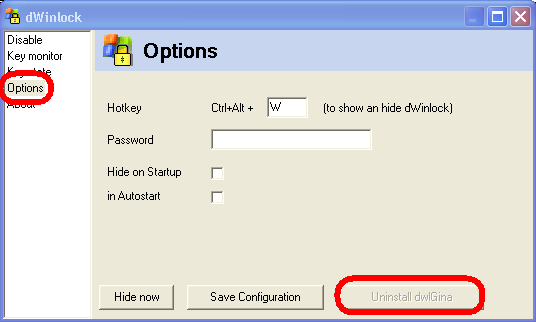

Patient Lock (dec 2008)
Algemeen
Omdat gebleken is dat met de huidige XP versie de patient blokkade niet meer voldoende betrouwbaar werkt, is een nieuwere versie van het lock onderzocht en aangeschaft.
Het patienten lock behoeft alleen aangebracht te worden op PC's waarop patienten hun antwoord invoeren.
Het installeren vereist een administraters bevoegdheid en omvat de volgende stappen:
1. het deïnstalleren van de oude lock
2. het starten van de testorganizer en het beantwoorden van een vragenlijst, hierbij wordt gevraagd of dlwgina geïnstalleerd moet worden, geef dus JA als antwoord.
DeÏnstalleren van de oude driver
Start het programma WinLock_Remove2.exe,
ga naar de tab "opties"

Als de knop "UnInstall dwlGina" beschikbaar is, geeft dat aan dat versie 2 is geïnstalleerd, door vervolgens op deze knop te drukken, wordt de versie 2 verwijderd.